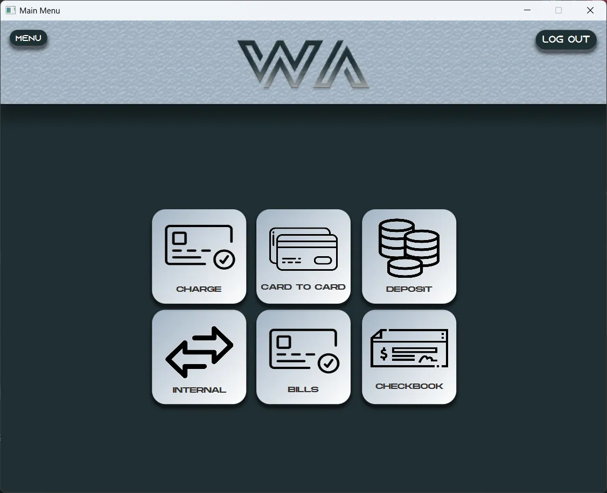
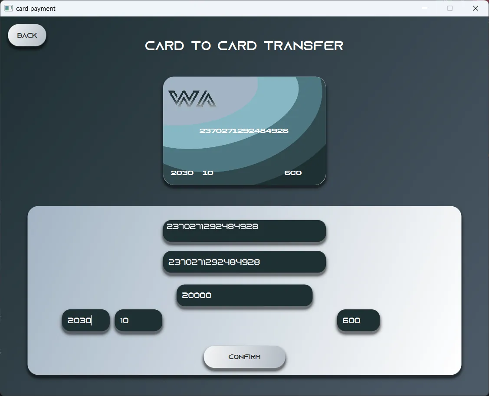
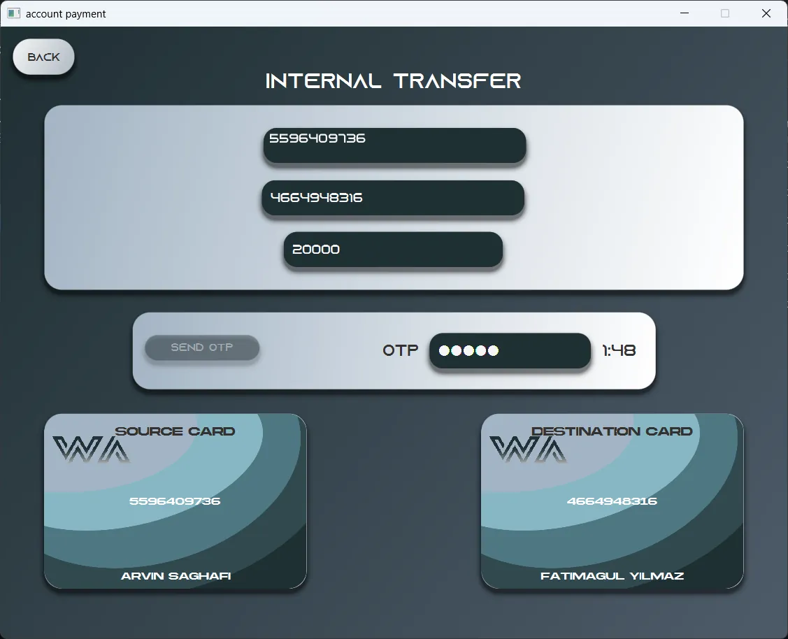

Customer
Transfers by card, account and IBAN, deposits, loans, cheque books, bill payments and mobile top-ups.
Case study
WA Bank is a desktop banking system written in Java and JavaFX on top of MySQL. It is really three applications — one for customers, one for employees and one for the bank's manager — working on the same data.
It started as a university project. We decided to treat it as a product rather than something to hand in, and one idea shaped the rest: online banking should feel like walking into a branch.
It was built by three people. Two teammates built the JavaFX screens for the customer, the employee and the manager. I wrote all of the Java behind them: the application logic, the database layer, the validation, and every interaction you can try on this page.
Most online banks let you in with an email and a password. Opening an account at a real bank takes more, so WA Bank asks for more: personal details, a photo of your national ID card, account preferences, and finally a declaration you have to sign with the mouse.
None of it is decoration. You cannot finish without a signature. Ticking "I accept" is not enough either, because the app checks that you actually opened the terms. And even then the account is only created as Pending: signing in tells you to wait for the moderator, until an employee has seen your ID and approved you.
Moving money is usually a form. In WA Bank the card is the interface. On the card-to-card screen the card at the top fills in as you type: start your own card number and the rest appears as a suggestion, press Enter and the number and expiry date complete themselves.
The internal transfer at the top of this page goes further. Once both account numbers are in, the two cards appear and you pay by dragging yours onto theirs. Every transfer also needs a one-time code that expires in two minutes, and the first six digits of a card number tell the app which bank it belongs to.
WA Bank is not one program with an admin page bolted on. Each role has its own application, and a request moves between them the way it moves between desks in a branch.
Details, a national ID photo, terms and a signature. The account and its card numbers are created, but the account is marked Pending.
The employee app loads the next pending application with its ID photo, and the employee verifies or denies it.
Until then, signing in only says to wait for the moderator. Once accepted, the customer can sign in and bank.
The manager's app does everything the employee's does, and also manages employees and accounts.
Transfers by card, account and IBAN, deposits, loans, cheque books, bill payments and mobile top-ups.
Verifying new customers, reviewing cheques and loan requests, transactions, deposits and financial reports.
Everything an employee can do, plus managing employees and the accounts themselves.
A bank has to look trustworthy, which usually ends up meaning cold. WA Bank aims for the middle. A deep slate background and soft steel blues keep it serious; rounded corners, a futuristic display face and the layered waves on the card keep it human.
Headings are set in Azonix and the cards in Akira Expanded — wide faces that feel closer to a product than to paperwork. Neither is licensed for the web, so the replicas on this page use close open-licence stand-ins.


